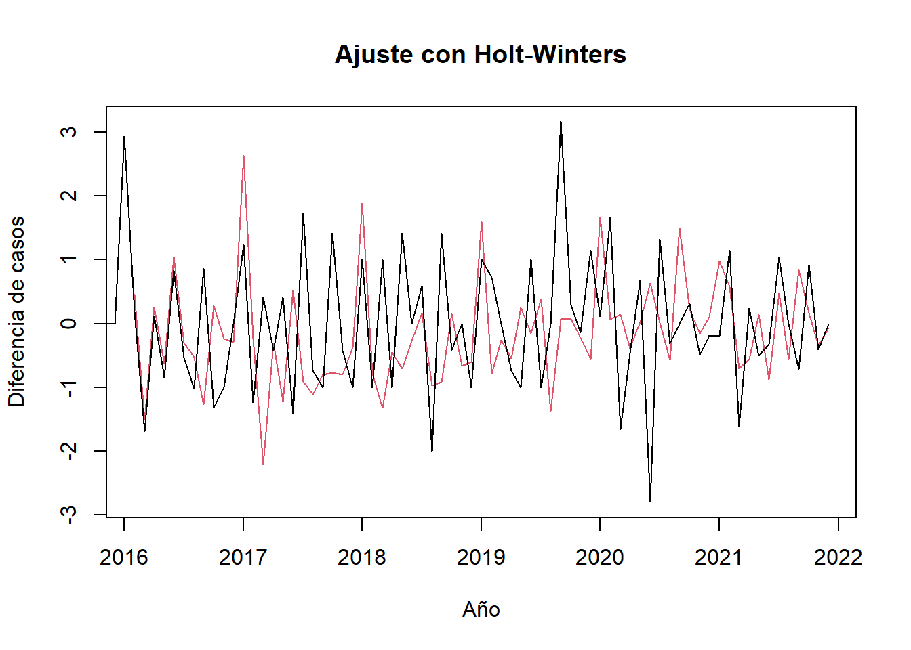
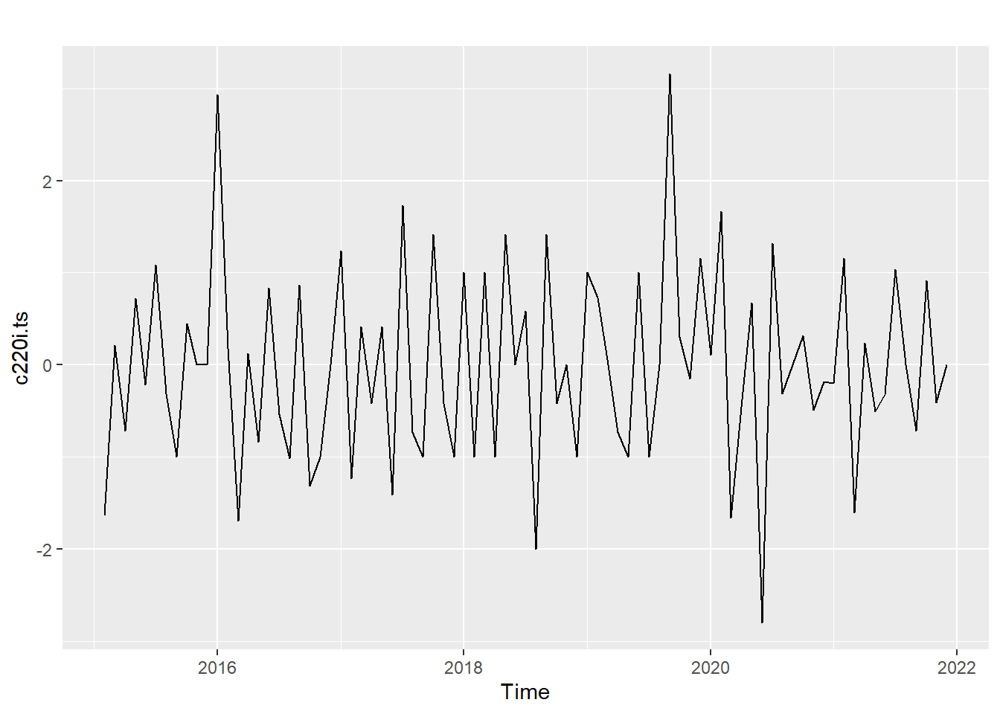
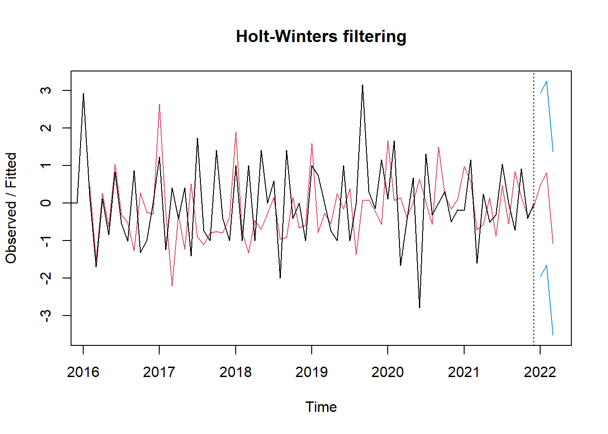

Chapter 4 Modelo de HW y Suavizamiento
En esta nueva sección se abordan aproximaciones cuantitativas al pronóstico de series temporales.
4.1 Modelo de Holt-Winters
Para comenzar, el modelo Holt-Winters es una técnica muy utilizada en el pronóstico de series de tiempo. Parece un recurso particularmente adecuado para el análisis de los casos de Dengue Grave, porque se trata de un conjunto de datos que corresponde a una ventana de tiempo relativamente pequeña. Además, los procesos de vigilancia epidemiológica típicamente se valen de pronósticos a corto plazo, por lo cual, algunas de las fortalezas del modelo Holt-Winter pueden ser útiles para predecir valores futuros de contagio a partir de las tendencias y patrones pasados.
A continuación se presenta el modelo ajustado a partir de la serie de tiempo que se creó utilizando el operador diferencia. Se seleccionó la componente estacional aditiva, pensando en que podría ser una elección adecuada dados los hallazgos preliminares de una cierta concentración de casos en los primeros meses del año, presumiblemente debido a factores ambientales, de modo que esta opción permitiría separar claramente la tendencia de los patrones estacionales de la serie de tiempo.
A partir de lo anterior, se encontraron los parámetros alpha, beta y gamma para dar peso a los valores pasados, a la tendencia y a la estacionalidad de los pronósticos.

Como se puede observar, salvo algunas pocas excepciones, las formas generales de las dos series no son parecidas. De modo que los puntos ajustados del modelo no siguen de manera precisa las tendencias y patrones de la serie de casos de Dengue Grave.
Con todo, se realiza la descomposición de los componentes de la serie de tiempo: nivel, tendencia y estacionalidad, como se observa a continación.

Si bien la componente de estacionalidad es un tanto irregular, en general, se confirma que el inicio de cada año presenta un repunte importante respecto a los valores de otros periodos. Además, aunque la data cruda no permitía identificarlo con claridad, las transformaciones y procedimientos aplicados permiten ver una cierta tendencia al alza en los casos de dengue grave.
A partir de todo lo anterior, se procedió a realizar un pronóstico de la cantidad de casos de dengue grave de los primeros tres meses del año 2022.
fit upr lwr
Jan 2022 0.4836529 2.929509 -1.962204
Feb 2022 0.8027942 3.251083 -1.645494
Mar 2022 -1.0709187 1.380271 -3.522108
El alcance del análisis hasta este punto no incluye la evaluación de la calidad de este pronóstico. Sin embargo, en caso de lograr un buen ajuste, se trataría de un insumo útil para tomar de decisiones oportunas relacionadas, por ejemplo, con las medidas de respuesta necesarias ante el escenario de un brote de Dengue Grave.
4.2 Suavizamiento Exponencial Simple
Una segunda técnica a la que se recurrió fue el Suavizado Exponencial Simple. Este también es un recurso muy popular para el ajuste de series de tiempo.
En términos generales, esta técnica asigna un mayor peso a las observaciones más recientes, lo cual podría reflejar la idea de que tienen más relevancia para las predicciones futuras. En caso de que esta fuera una presuposición acertada, el modelo sería prometedor porque podría responder rápidamente a los cambios de patrones en los datos.
En este caso, se procedió a realizar algunso cálculos, pero quedó pendiente para las siguientes unidades el desarrollo detallado del mismo.
A continuación se ajusta un modelo de suavización exponencial simple de la serie de tiempo preparada a partir del operación diferencia aplicado a los casos de Dengue Grave. Se fija el parámetro h para realizar una predicción para un solo periodo futuro. El resultado pronosticado se para el próximo valor de la serie se presenta junto a los intérvalos de confianza del 80% y 95%.
Point Forecast Lo 80 Hi 80 Lo 95 Hi 95
Jan 2022 -0.02301473 -1.504589 1.458559 -2.288887 2.242857También se presenta el resumen del modelo, incluyendo las medidas de error, las cuales podrán ser útiles para comparar su desempeño respecto a otras alternativas, cuando llegue el momento.
Forecast method: Simple exponential smoothing
Model Information:
Simple exponential smoothing
Call:
ses(y = c220i.ts, h = 1, initial = "simple", alpha = 0.1)
Smoothing parameters:
alpha = 0.1
Initial states:
l = -1.6369
sigma: 1.1561
Error measures:
ME RMSE MAE MPE MAPE MASE ACF1
Training set 0.1944459 1.156078 0.9034312 NaN Inf 0.7809487 -0.2580375
Forecasts:
Point Forecast Lo 80 Hi 80 Lo 95 Hi 95
Jan 2022 -0.02301473 -1.504589 1.458559 -2.288887 2.242857